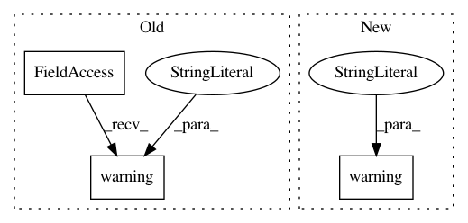

b69c5b6bb1ad6c59de357b5a8729719b6fd3b749,unittests/test_logging.py,TestLoggerConfiguration,test_handler_append,#TestLoggerConfiguration#,163
Before Change
// Reload logger
self.set_logger()
self.logger.warning("bar")
self.assertTrue(self.found_in_logfile("foo"))
self.assertTrue(self.found_in_logfile("bar"))
After Change
// Reload logger
configure_logging(self.logging_config)
getlogger().warning("bar")
self.assertTrue(self.found_in_logfile("foo"))
self.assertTrue(self.found_in_logfile("bar"))
In pattern: SUPERPATTERN
Frequency: 5
Non-data size: 3
Instances
Project Name: eth-cscs/reframe
Commit Name: b69c5b6bb1ad6c59de357b5a8729719b6fd3b749
Time: 2017-12-07
Author: karakasis@cscs.ch
File Name: unittests/test_logging.py
Class Name: TestLoggerConfiguration
Method Name: test_handler_append
Project Name: automl/SMAC3
Commit Name: ba29de1b2599373a369342d3a093a953133ee3d8
Time: 2018-11-15
Author: feurerm@informatik.uni-freiburg.de
File Name: smac/optimizer/random_configuration_chooser.py
Class Name: ChooserLinearCoolDown
Method Name: __init__
Project Name: tensorflow/tensorboard
Commit Name: 009aaea6e7432a9acdffabf202a573020a23f14c
Time: 2016-04-22
Author: nobody@tensorflow.org
File Name: tensorboard.py
Class Name:
Method Name: main
Project Name: eth-cscs/reframe
Commit Name: b69c5b6bb1ad6c59de357b5a8729719b6fd3b749
Time: 2017-12-07
Author: karakasis@cscs.ch
File Name: unittests/test_logging.py
Class Name: TestLoggerConfiguration
Method Name: test_handler_noappend
Project Name: OpenNMT/OpenNMT-tf
Commit Name: 58df6d7963eec66f6f3c52c55e3eba7a4927d34c
Time: 2019-07-05
Author: guillaume.klein@systrangroup.com
File Name: opennmt/models/sequence_to_sequence.py
Class Name: SequenceToSequence
Method Name: compute_loss